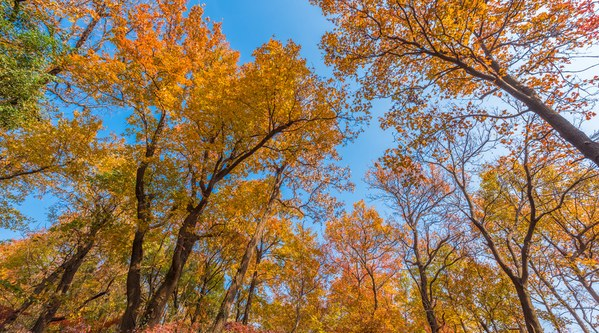
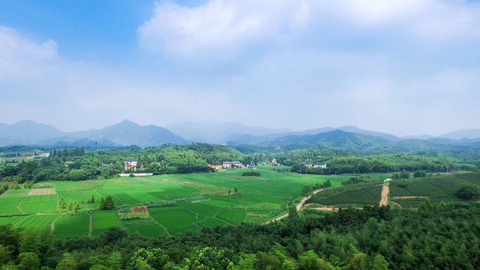
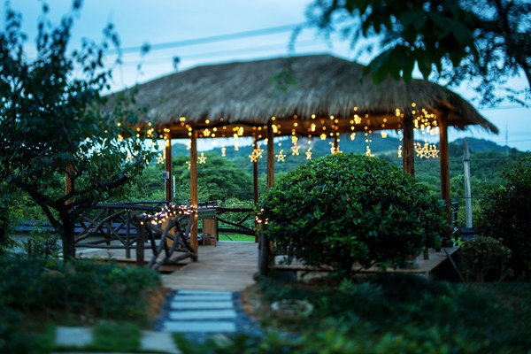
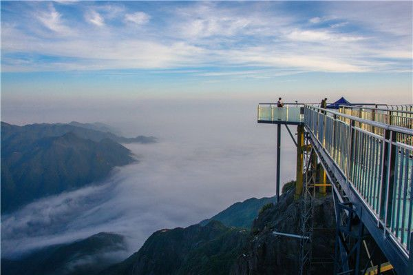
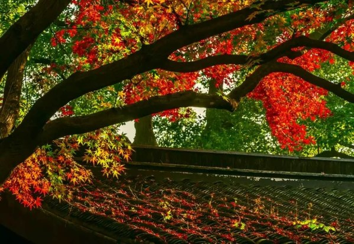
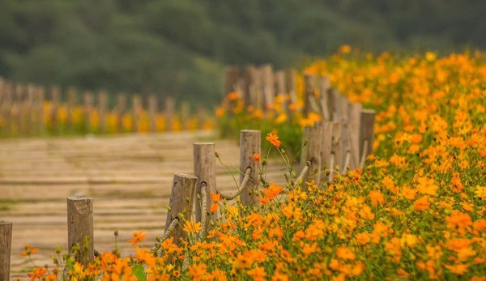
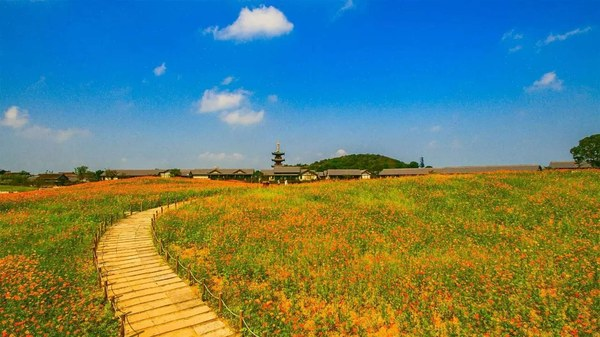
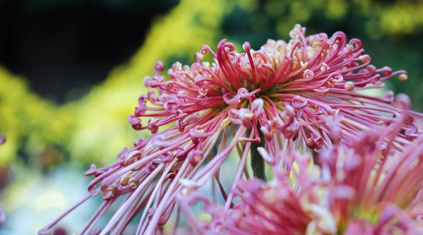

寒露是秋季的第五个节气，标志深秋来临，那么清霜映秋的美景不要辜负哦〜
@登高好去处
➢江苏镇江焦山
“焦山秋意浓，丹黄叶不同”，焦山是长江中唯一一座四面环水， 可观光探幽的岛屿，古刹梵音，古碑荟萃，古树葱茏，为焦山增添了无穷雅趣。

焦山碑林，是江南第一大碑林，凝结清奇的长江文化，张扬人文个性，相较于名山大川，此为它独特之处。
➢浙江湖州莫干山
莫干山享有“江南第一山”的美誉，其中心景区包括塔山、中华山、金家山、屋脊山、莫干岭、炮台山等，可看日出、云海，可观瀑布、清泉。

且莫干山的人文景观丰富，有清末民初兴建的数百幢别墅，以及难以计数的诗文、石刻、事迹等。

➢广东连山金子山
有广东第一险、南粤小华山的美誉。“绝壁天梯”可不是虚有其名，500米路程，80°坡度，“悬挂”在的金子山悬崖峭壁之上，直通云顶。

最高峰的天梯则用玻璃建成的，是国内首个玻璃天梯。
➢北京灵山
灵山顶峰海拔2303米，是北京市的第一峰，海拔已经超过了泰山，一个铺满草坪的高山，在北方的岩石山群里很少见。
来到灵山方知城乡大不同。入夜，遥望星空，这里视野开阔，可以看到“天阶月色凉如水，卧看牵牛织女星”的美景。
@赏花好去处
➢江苏无锡拈花湾
拈花湾，是无锡马山国家风景名胜区的一个小镇。拈花湾在太湖边、灵山脚下，可以说得尽了天地人文灵气，所以生态秀美，环境优越。

初见拈花湾，你定会觉得这儿太像日本京都了。但京都的“日式”风格，本就是仿照我国唐朝长安城而建的。
所以说到底，拈花湾确是地道的“唐宋风”，即唐代的建筑、宋代的飞梁。

还有数百亩的硫华菊，迎着秋风、摇着花枝在等你

➢浙江桐乡
桐乡是“中国杭白菊之乡”，每到深秋时节，桐乡农村便到处繁花如雪，弥望皆白，因此被誉为“百花地面”。
桐乡人会在这个季节用菊花装扮整个城市，用遍地田野杭白菊建起独一无二菊海生态旅游观光基地，
让游客走进桐乡体验着花的浪漫，并感受到这片田野的主人特有的真诚和质朴。
➢广东中山小榄
小榄有着悠久的历史和深厚的人文底蕴，因小榄人喜爱养菊、赏菊，且每年有举办菊花欣赏会的传统，被誉为“菊城”。
小榄的赏菊地主要在龙山公园，这里的菊花不但可以在白天看，晚上更是别有一番滋味，配着各色花灯，菊花也显得羞怯而美丽。
➢北京北海公园
北海公园每年都有大型的菊花展，每年9月至11月，会展出数百品种的菊花，争奇斗艳，美不胜收。

今年北海公园的菊花展，以造型菊为看点，主题为“御苑鞠颂”的精品菊花展览共分为六个区域，
“祥瑞阐福”、“鹤舞颂寿”、“鹿喜秋实”等主题布景展区。